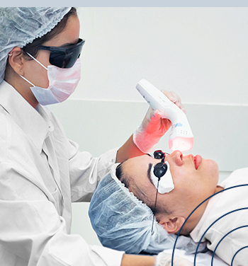

CLÍNICA DE ESTÉTICA DERMO FUNCIONALE

- Página inicial
- Agendar
O que é a fisioterapiar dermatofuncional?
O fisioterapeuta dermatofuncional, estará apto para auxiliar em tratamentos, como nos seguintes casos: Flacidez da pele; Gordura localizada; Estrias; Cicatrizes. Além disso, os profissionais que atuam com fisioterapia dermatofuncional podem utilizar recursos e práticas que funcionem de forma integrada para promover a qualidade funcional do paciente, associando tratamentos ou agentes de aplicação, podendo ser térmicos, elétricos, mecânicos ou fototerapêuticos.
Para que serve a fisioterapia dermofuncional?
Como o próprio nome indica, essa área busca recuperar a estética e, também, a função do revestimento externo do corpo. Em geral, essas disfunções têm a ver com intervenções cirúrgicas, doenças e outras complicações que levam ao surgimento de cicatrizes, manchas, estrias e flacidez.
Para quem é indicado?
É indicado para qualquer pessoa que enha alguma característica em sua pele e que não goste, assim procure um fisioterapeuta dermatofuncional para fazer os melhores tratamentos para isso.
Quais as contraidicações?
As containdicações são algumas, e dentre elas estão:
uso de radioterapia ou quimioterapia;
cardiopatias severas;
infecções locais ou sistêmicas;
deficiências de coagulação;
problemas hepáticos e renais graves;
gravidez.
Quais resultados esperar?
A Fisioterapia Dermatofuncional atua no tratamento dessas disfunções, além de proporcionar benefícios como melhora da circulação sanguínea, do tônus muscular e da hidratação da pele. Dessa forma, contribui para a melhoria da qualidade de vida e da saúde estética das pessoas
Qual o profissional que pode realizar?
É primeiro preciso ser formado em fisioterapia. Em seguida, é necessário fazer curso de pós-graduação voltado para a área para poder atuar como fisioterapeuta em dermatofuncional. Em nossa clínica possuímos a doutora Ana Clara que atua nessa área e em alguns casos a doutora Francielly também pode estar atuando.
Gostou de conhecer sobre a fisioterapia dermatofuncional e se interessou por ela, então, agende sua consulta com algum de nossos profissionais.